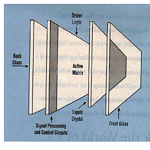

- 1. Uses of Flat Panel Displays (FPD's)
- a. Lap-top computers
- b. Military Aircraft/Tank
- c. Automobile
- d. Portable Televisions
- e. TV Cameras (camcorder viewfinder)
- f. Handheld games
- 2. Current Flat Panel Display (FPD) Technologies
- a. Liquid Crystal Displays (LCD's)
- b. Plasma Displays (PD's)
- c. Electroluminescent Displays (ELD's)
- 3. Active matrix LCD (AMLCD's) dominate FPD's but disadvantages

- a. Work by polarized light passing through LCD coated glass sheets
- 1) One sheet -> Active Matrix Driving Circuitry
- 2) Other sheet -> Array of Red, Green, Blue Dots
- b. Disadvantages
- 1) Limited Viewing Angle
- 2) Limited Size (13" Diagonal, 6.3 million pixels max, 1994) #1
- 3) Limited Number of Colors
- 4) High Power Requirements for back light
- 5) Inefficient - Polarized and Color Filters Reduce Light Output
- 6) Difficult to fabricate - many critical microfabrication steps (TFT's)
- 7) Very High Capital Investment
- 8) High Production Cost - Low Yields
- 4. Traditional Cathode Ray Tube (CRT)
- a. Advantages: Better Image Quality than FPD's
- 1) High Brightness
- 2) Large Sizes
- 3) Large Viewing Angle
- 4) Enormous Number of Colors
- 5) Very fast
- b. Disadvantages:
- 1) Physically bulky
- 2) Large power consumption
- 3) Screen Flicker
- 1. Enormous Potential Future Role #1 & #8
- a. Promises to dominate AMLCD's and maybe CRT's
- b. Higher Image quality than AMLCD's (res, num col)
- c. >3 times Brighter (> 200 cd/m^2) than AMLCD's
- d. 4 times more energy efficient than AMLCD's (2W for 10" VGA)
- e. Virtually 180 degree Viewing Angle (Vert & Hor)
- f. Increased Speed: Fast Response Time -> under 2 usec
- g. Very thin package - 2.4 mm typically
- h. Wide operating temperature (-55 to 85 C) vs. AMLCD's (0-50 C)
- i. Fewer critical fabrication steps than AMLCD's
- j. Should cost 40-60% less than AMLCD's
- k. A lot of current development in U.S.
- l. May give U.S. stronghold over Japan in FPD 's
- 2. What are FED's ? Combine best of CRT and FPD's
- a. Electron beam illuminates R, G, B phosphors
- b. New cathode: microfabricated pyramids emit e-'s
- c. Thousands of tips behind each pixel
- d. Matrix row-column addressing so no TFT's
- e. No bulky deflection coils /wire filaments
- f. No back light, color filters, polarizing filters, LC's
- g. Totally flat package (2-4 mm thick)
- h. Simple design
Main Outline
II. Basic Theory
Sources